English Edition
English Articles
Native-English Drugnews analysis for global biotech, pharma, investor-relations, and capital-market readers.
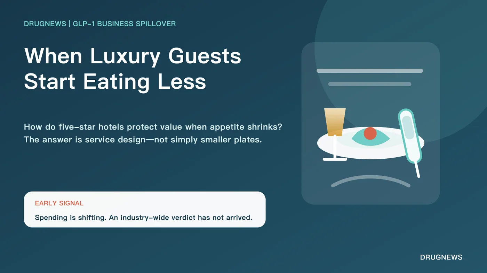
GLP-1 Drugs Are Making Luxury Guests Eat Less. How Can Five-Star Hotels Protect Revenue?
A U.S. household transaction study found that grocery spending fell 5.3% on average six months after GLP-1 adoption and 8.2% among higher-income households. Some luxury hotels are already testing smaller portions, protein-forward menus, zero-proof drinks and wellness services. The strategic question is whether hospitality operators can translate lower food volume into better service, pricing and repeat demand.

Avexitide Reduced the Composite Rate of Level 2/3 Hypoglycemia Events by 55%—and Repriced Amylyx Overnight
Avexitide reduced the combined rate of Level 2 and Level 3 hypoglycemic events by 55% versus placebo in Amylyx's Phase 3 LUCIDITY trial, sending the shares up about 64% in one session. This analysis examines the GLP-1 mechanism in post-bariatric hypoglycemia, the evidence still missing from the topline release, Amylyx's $35.1 million asset acquisition, its $500.2 million financing and the regulatory and commercial gates ahead.
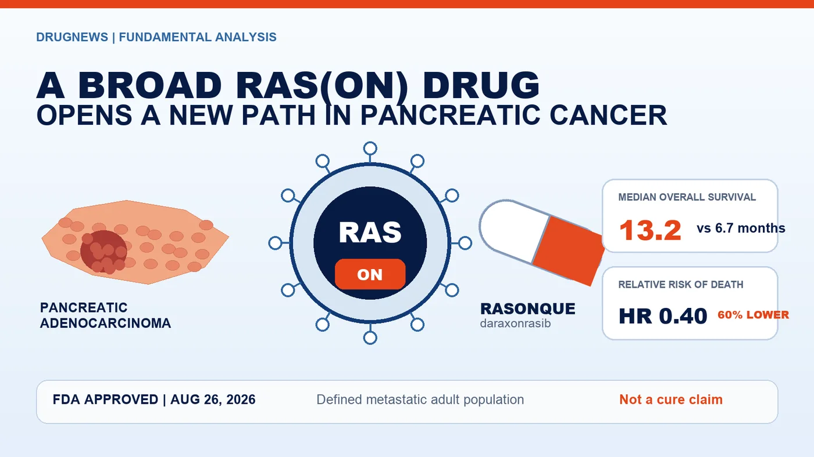
Pancreatic Cancer Finally Gets a Broad RAS(ON) Drug: Inside RASONQUE's FDA Approval
The FDA approved Revolution Medicines' RASONQUE 6.5 months ahead of schedule for a defined metastatic pancreatic adenocarcinoma population. This analysis examines the RASolute 302 survival data, the RAS(ON) mechanism, Revolution's eleven-year strategic pivot and the pricing, access, safety and global execution tests that begin after approval.
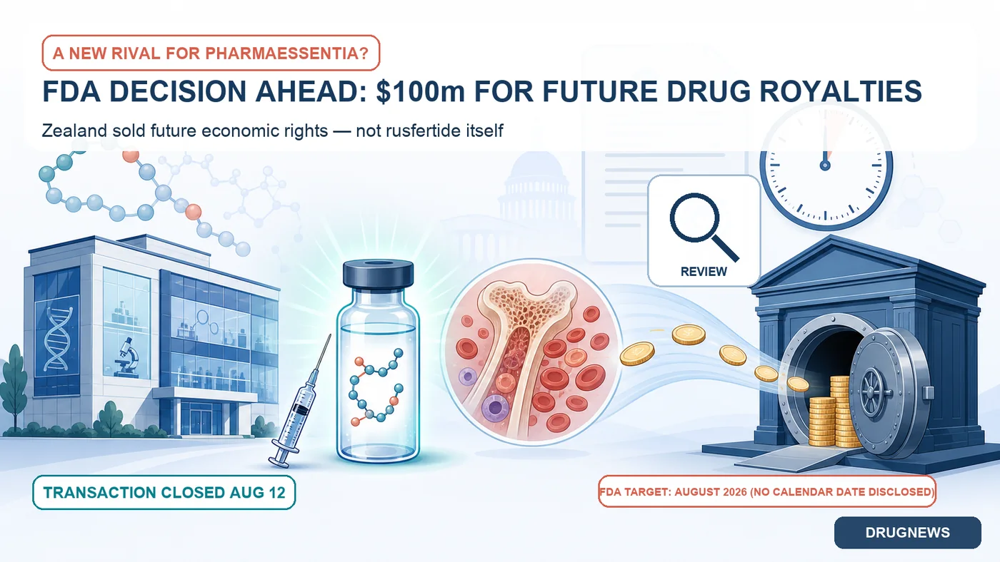
A New Rival for PharmaEssentia? What Zealand Actually Sold for $100 Million
Zealand Pharma sold rusfertide-related milestones and a 1% global net-sales royalty for up to $100 million, not control of the drug itself. The transaction clarifies how Zealand, Protagonist and Takeda hold very different economics—and what rusfertide could mean for PharmaEssentia's BESREMi.

DNA Is Not the Nvidia of AI Drug Discovery, At Least Not Yet
Twist Bioscience is seeing rapid growth in AI-enabled drug-discovery orders and DSPS revenue, but demand growth, unit value and industry moat are not the same thing. The scarce asset may be the full wet-lab system that converts massive sequence volumes into proteins, functional data and model feedback.
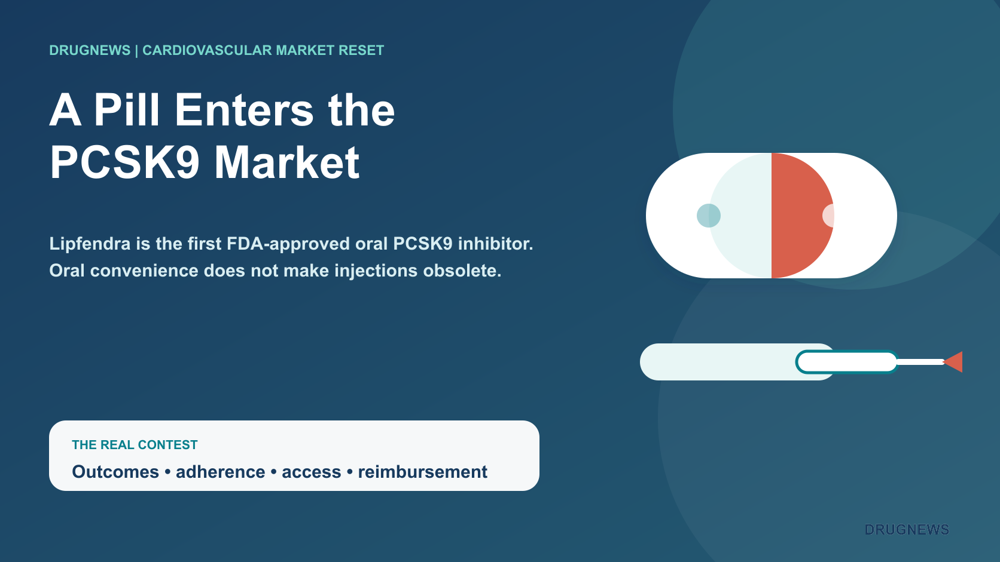
Merck’s Oral PCSK9 Drug Enters an Injectable Market: Who Really Loses?
Lipfendra is the first FDA-approved oral PCSK9 inhibitor, lowering LDL-C by 56% and 59% in two Phase 3 trials. Oral dosing opens a major market, but cardiovascular outcomes, fasting adherence, payer access and Taiwan approval will decide whether it expands the category or displaces injections.

The Stronger the Backbone, the More Valuable the Missing Layer: Can Anbogen's ABT-301 Enter the Next Wave of Oncology BD?
Big Pharma is paying for incremental efficacy around established therapies. ABT-301 has completed Phase 1; the CRC triplet's efficacy, sustainable dosing, durability and biomarker readouts will determine whether it can become a Combination Layer and open substantive partnering opportunities.
Curium and Lantheus Agree to an Up-to-$8 Billion Merger: Radiopharma Becomes a Full-Stack Business
The $7 billion Curium-Lantheus rumor covered in June became a definitive agreement on August 3: $102.50 in cash plus up to $12.00 per share in CVRs, for total consideration of up to $8 billion. The strategic prize is an integrated chain spanning isotopes, manufacturing, distribution, diagnostics, therapy and U.S. hospital access.
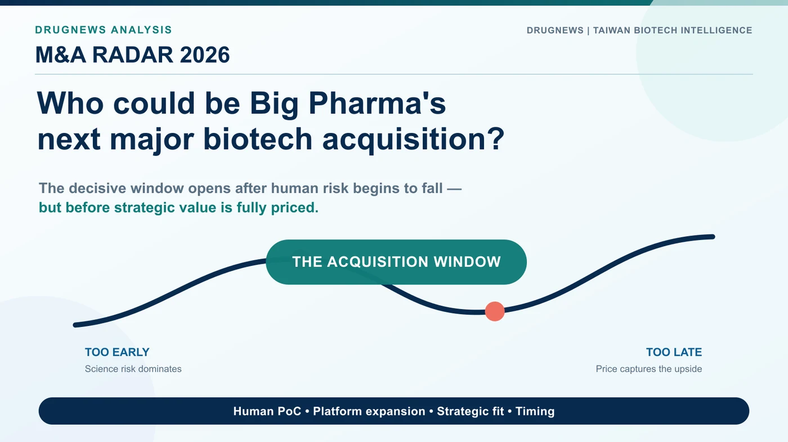
Who Could Be Big Pharma's Next Major Biotech Acquisition?
Biopharma acquisition capital in 2026 is clustering around a narrow window: human risk has started to fall, but strategic value is not yet fully priced. Alkermes, Dyne, First Tracks, Legend and Sail illustrate five ways a biotech can enter that window, while Taiwan's Pharmosa Biopharm and Belite Bio show how late-stage assets can speak the same global language.
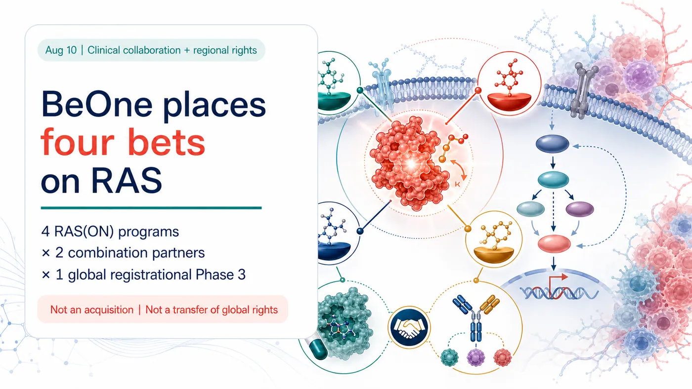
BeOne Bets on Four RAS Drugs: The Real Asset Is Development Optionality
BeOne is taking regional rights to four RAS(ON) programs, opening two candidate combination routes and funding one global registrational Phase 3. The strategic asset is not the sum of four drugs, but the optionality to decide where capital and development speed matter most.
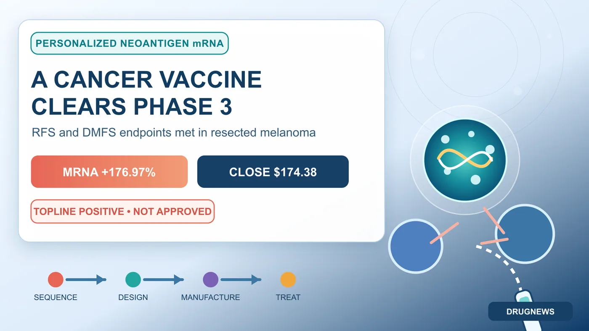
Moderna Surges 176.97% After Its Personalized Cancer Vaccine Clears a Phase 3 Test
Positive topline results from INTerpath-001 sent Moderna shares up 176.97% in one session. The deeper valuation question is whether patient-specific design, manufacturing, release and clinical delivery can become a scalable platform.

NVIDIA Enters Pharma: BMS Readies 576 GPUs as Lilly Commits Up to $1 Billion
BMS is preparing to deploy what NVIDIA's published specifications imply is a 576-GPU Rubin system, while Lilly and NVIDIA plan to commit up to $1 billion over five years. The real contest is whether proprietary data, wet-lab execution and clinical evidence can become one learning loop.
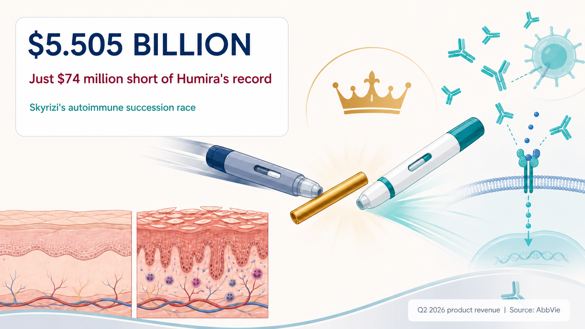
Just $74 Million Short: Can Skyrizi Succeed Humira as the Autoimmune Drug King?
Skyrizi generated $5.505 billion in Q2 2026, only $74 million below Humira's historic quarterly peak. The real succession test spans efficacy, treatment burden, multi-indication reach and access.

Eli Lilly Sold $23 Billion in One Quarter. Why Is It Still Rushing to Buy the Next Drug King?
Tirzepatide has allowed Eli Lilly to dominate both diabetes and obesity, but revenue concentration, pricing pressure and the next product relay are the investment questions that matter now.
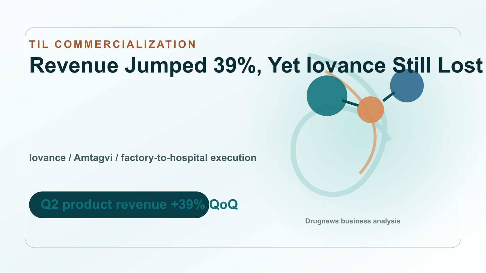
Revenue Jumped 39%, Yet Iovance Still Lost $47 Million: Can Cancer Cell Therapy Become a Business?
Iovance's Amtagvi rebounded sharply in the second quarter, but the central question is no longer whether TIL therapy can work. It is whether a personalized cell therapy can become a reproducible, reimbursable and scalable medical service.
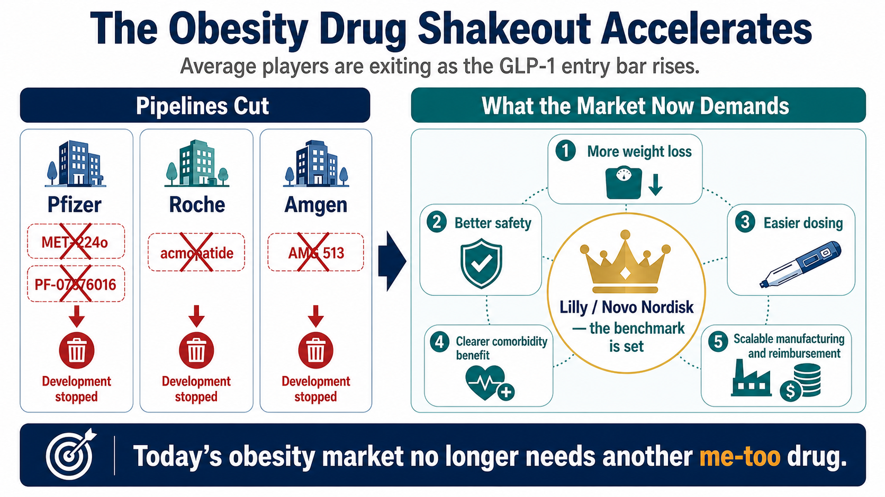
Pfizer Paid Billions for Obesity Assets. Is It Already Cutting Its Losses?
Pfizer, Roche and Amgen are pruning obesity programs that lack clear differentiation. The GLP-1 market has moved from a race to enter the clinic to a contest across efficacy, safety, convenience and commercial execution.
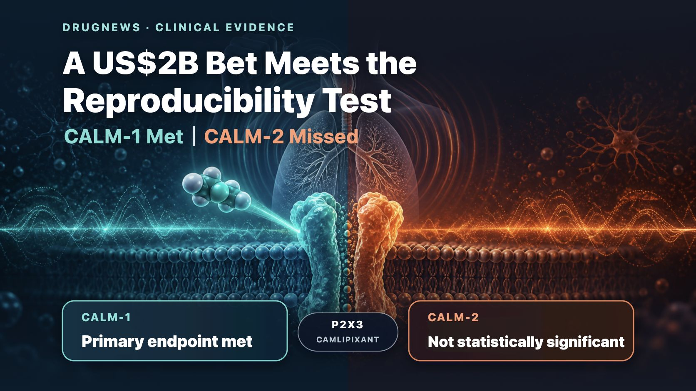
GSK's US$2 Billion Cough-Drug Bet Hit a Phase 3 Reproducibility Wall
After GSK's roughly US$2 billion acquisition of BELLUS Health, CALM-1 met its endpoint but CALM-2 did not reproduce the result. The divergence shows why Phase 2 promise, patient experience and reproducibility must move together.

This Taiwanese Biotech Is Building a Nanorocket Inside the Human Body
Oligonucleotide therapeutics are moving from sequence design to extrahepatic delivery. Intelligene is using EV and LNP platforms to target the lung and airways, testing whether RNA medicines can truly reach disease sites beyond the liver.

Novo Nordisk’s 6,300-Patient ZEUS Failure: A Textbook Lesson in Translational Risk
ZEUS showed the central translational risk in cardiovascular drug development: ziltivekimab suppressed the IL-6 pathway, but the 6,300-patient outcomes trial did not reduce three-point MACE.

Can $1.2 Billion Help AI Double the Pace of Drug R&D?
The Bio Genesis Mission is an attempt to connect supercomputing, biomedical data, AI agents, automated laboratories, clinical networks, and regulation into one R&D loop. Its real test is whether governed data and reproducible experiments can reach patients faster.

After 20 Years, Have HDAC Inhibitors Finally Found Their Role? Why ABT-301 Could Become a Next-Generation Combination Backbone
Chidamide has brought HDAC inhibition back into solid-tumor development. ABT-301 must now show that a wider therapeutic window, triplet combinability, and human immune-mechanism data can support a next-generation combination backbone.

$130 Billion in Six Months: Big Pharma Is Buying Time
Biopharma M&A reached approximately $130 billion in the first half of 2026 as buyers favored late-stage and near-launch assets. This is not a broad biotech bull market; it is Big Pharma using cash and contingent deal structures to buy measurable development time before the patent cliff.
J&J's Oral Psoriasis Drug Logged 18,000 Prescriptions in Its First Full Quarter. Is It Coming for Injectables?
ICOTYDE logged more than 18,000 prescriptions in its first full quarter. The oral IL-23R peptide has earned entry into the high-efficacy psoriasis market, but durable value still depends on paid fills, persistence, payer quality, safety, and additional indications.
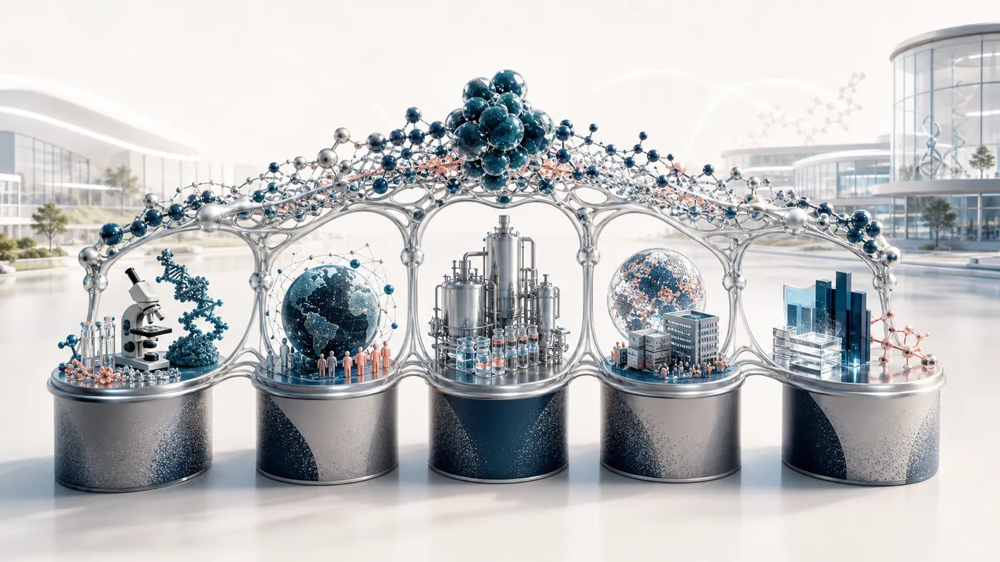
Why These Four Biotechs Can Afford Not to Sell
argenx, Insmed, Incyte, and Revolution Medicines show why biotech independence depends on product evidence, cash generation, a second growth curve, global execution, and financing without surrendering control.
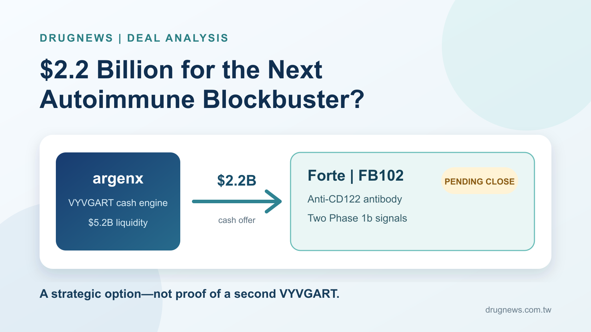
$2.2 Billion for the Next Autoimmune Blockbuster?
argenx plans to pay $2.2 billion in cash for Forte and its early anti-CD122 antibody FB102. The real test is not one Phase 1b p-value, but whether VYVGART's product success reflects a development engine the company can repeat.
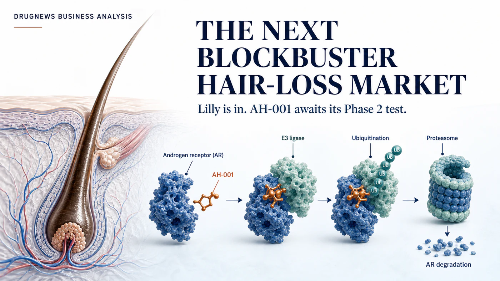
Investors, Take Note: Hair Loss Could Be Biotech's Next Weight-Loss-Drug-Sized Blockbuster
Lilly has placed a $40 million bet on next-generation hair-loss drugs. With roughly 80 million U.S. patients still constrained by two legacy therapies, AH-001's Phase 2 data could become the next global asset-revaluation trigger.
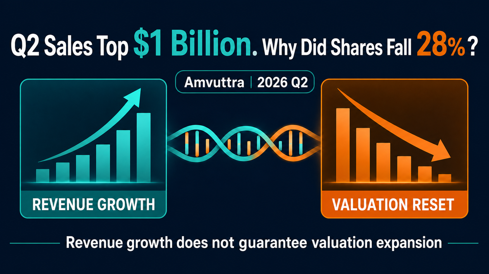
More Than $1 Billion in One Quarter: Why Did Alnylam Plunge 28%?
Amvuttra surpassed $1 billion in quarterly sales, yet Alnylam cut its TTR guidance and lost 28% in one day. The reset was not about RNAi technology failing; it was about pent-up demand normalizing, revenue concentration and the timing gap before a second commercial pillar arrives.
A $400 Billion Pharma Merger? AstraZeneca and Bristol Myers Squibb Are Reportedly Talking
AstraZeneca and BMS reportedly explored a combination with a combined market value approaching $400 billion. There is no announced transaction. The real questions are AstraZeneca's 2030 growth target, BMS's Eliquis and Opdivo exclusivity timeline, oncology-pipeline overlap, antitrust and whether integration can actually buy time.
Tau Earned a Retest: Why Biogen Is Taking Diranersen Into Phase 3 After CELIA Missed Its Primary Endpoint
CELIA missed its prespecified dose-response primary endpoint, yet the lowest dose produced a 0.54-point CDR-SB difference, or 26% slowing, while CSF total tau and tau PET moved in the expected direction. That is enough to justify Phase 3 planning, but not enough to declare tau a validated second disease-modifying pathway.

Bempikibart in Alopecia Areata: A 33-Patient Signal Is Not Yet a Win Over JAK Inhibitors
Q32 Bio nearly doubled after a 33-patient, single-arm Phase 2a readout. The investable questions are whether efficacy survives randomization, whether responses persist after treatment stops, and whether a larger safety database can support a differentiated place beside JAK inhibitors.
AnBogen Therapeutics: Building a “Starlink” for Cancer Immunotherapy
Can a small molecule from Taiwan extend the $30 billion PD-1 ecosystem into the 95% of metastatic colorectal cancer patients still beyond immunotherapy’s reach?

After Xtandi: Can Astellas Build an Oncology Platform?
Xtandi still dominates Astellas oncology sales. The real test is whether Padcev, Vyloy and the next CLDN18.2 assets can become a repeatable post-LOE platform.
Pelacarsen's HORIZON Test: Does Lowering Lp(a) Prevent Cardiovascular Events?
Pelacarsen can substantially lower Lp(a), but HORIZON must show whether biomarker reduction on top of standard care translates into fewer cardiovascular deaths, myocardial infarctions, strokes and urgent revascularizations.
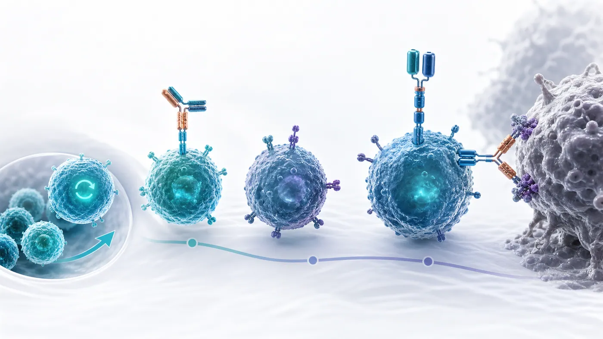
T-cell Exhaustion Across PD-1, CAR-T and TCE: Immunotherapy's Next Contest Is Durability
PD-1 blockade, CAR-T and T-cell engagers ultimately depend on T cells that can expand, renew and persist. This analysis connects exhaustion biology, product engineering and clinical evidence to the next competitive threshold in immunotherapy.

$130 Billion in Six Months: Big Pharma Is Buying Time
Biopharma M&A accelerated in the first half of 2026, but BioSpace's 52 deals and IQVIA's 42 deals cannot be combined. The deeper story is that patent cliffs are pushing Big Pharma to pay for measurable clinical time.
Roche's Hidden Succession Engine: How 19 New Molecules Could Power the Next Growth Cycle
Roche generated CHF 47.669 billion in pharmaceutical sales in 2025, with Ocrevus, Hemlibra, and Vabysmo already accounting for roughly one-third of the total. The number that matters is not simply 19 potential new molecules, but whether giredestrant, fenebrutinib, obesity, Alzheimer's, and protein-degradation assets can inherit Roche's existing clinical, diagnostic, and commercial infrastructure on time.
SpaceX Goes to Orbit. Is the Money in the Crystals?
SpaceX is making low-Earth-orbit round trips more routine, but rockets do not discover drugs. From Keytruda crystallization and SpaceMD to Varda, UK regulation, and a Taiwan mission, this analysis asks whether microgravity-enabled manufacturing can pass the tests of repetition, scale-up, and regulation.

When a Biotech Says No to a Sale: Five Tests of Whether It Can Become a Biopharma
An acquisition is not the only successful outcome for a biotech. Using argenx, Insmed, Incyte, and Revolution Medicines as four operating snapshots, this analysis tests product evidence, cash generation, a second growth curve, global execution, and financing options—and shows what retaining control really costs.

Madrigal's MASH Platform Strategy: Rezdiffra as the Cornerstone, siRNA as the Next Growth Engine
Rezdiffra has opened the MASH market and built its commercialization infrastructure. Madrigal is now adding six Ribo siRNA programs and Arrowhead's ARO-PNPLA3 to create a cornerstone-plus-precision-combination treatment matrix.
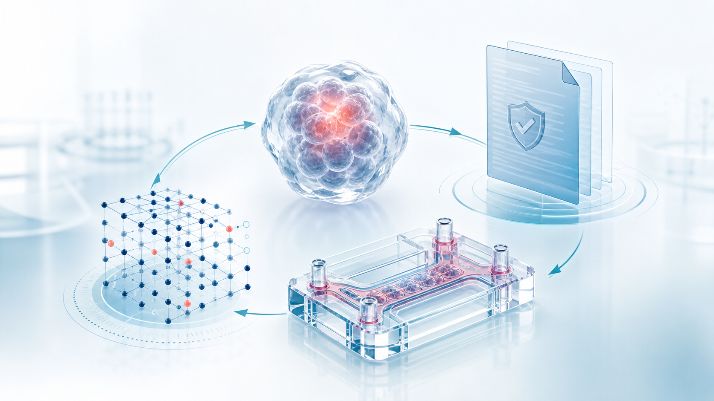
Animal Studies Are Not Disappearing. Drug Development Rules Are Changing.
China's CDE PIONEER program opens a regulatory pathway for new approach methodologies. The real test is whether human-relevant evidence becomes reproducible, validated and reusable.
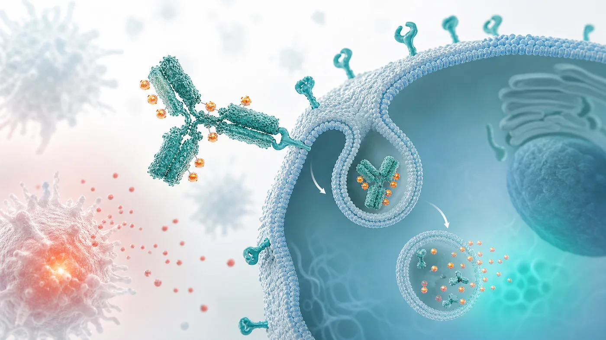
When ADCs Enter Autoimmune Disease: Precision Immune Modulation, Not More Killing
The opportunity for autoimmune ADCs is not to transplant oncology cytotoxins into immune cells. It is to deliver powerful glucocorticoids, small molecules, ASOs or siRNAs selectively to the cells that drive disease. LFD-200 offers an early human proof-of-mechanism signal for that thesis.

RevMed Upends Pancreatic Cancer Again: The RAS Combination Era Has Arrived
Daraxonrasib has already raised the bar with phase 3 overall-survival data. Early zoldonrasib combinations now suggest that pancreatic cancer's RAS competition is shifting from single agents to treatment ecosystems.

Big Pharma's New $10 Billion M&A Wave: Why Differentiation Now Beats Scale and Hype
Vertex's roughly $10 billion deal for Crinetics captures a wider change in Big Pharma's acquisition taste: away from scale and fashionable platforms, toward niche leadership, technological step-changes and commercial visibility.
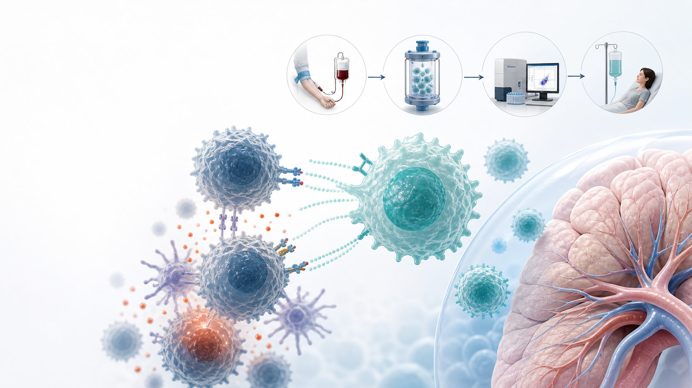
After the Nobel Prize, Do Not Rush the First-Approved Treg Story: The Real Test Is Turning Immune Tolerance Into a Product
The Nobel Prize illuminated Treg biology, but commercial value will depend on whether immune tolerance can become a releasable, trackable, scalable and reimbursable product, not on an unverified first-approval headline.
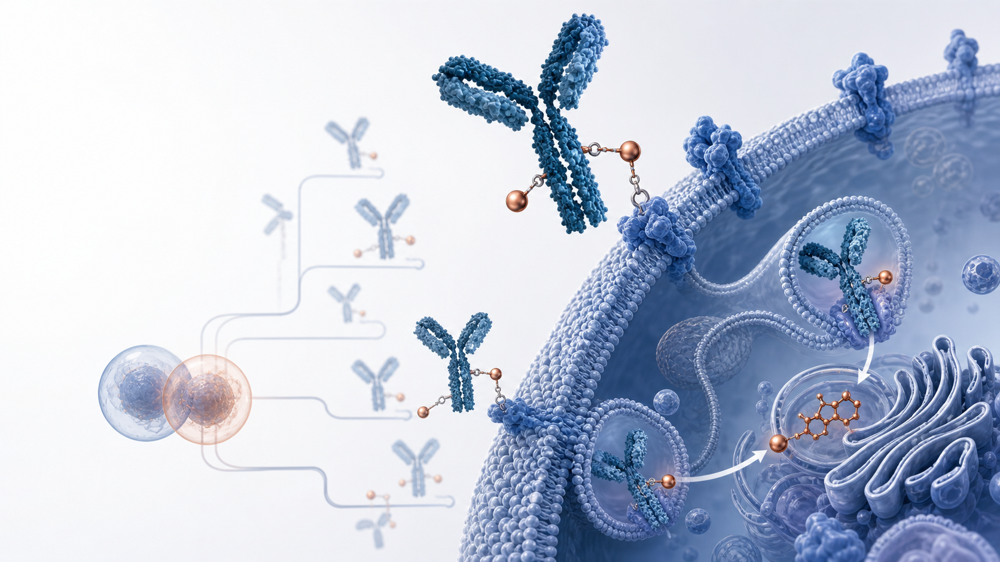
The Next ADC War: Novartis Is Paying Up to $1.5 Billion for Myricx, but the Real Prize Is a New Payload Class
Novartis is paying up to $1.5 billion for Myricx. The strategic prize is not merely two ADC assets, but an NMT-inhibitor payload platform that could reopen the questions of therapeutic window, resistance and platform value.
Foundation Models Enter Drug Discovery: Anthropic Launches Claude Science as AI Companies Move Into the Real R&D Arena
Anthropic's launch of Claude Science and its move into drug discovery show foundation-model companies shifting from research tools into real R&D workflows. AI drug discovery will ultimately be judged by experiments, clinical data and tradable assets.
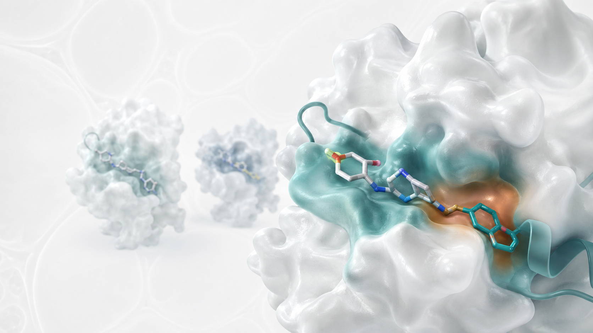
Winning First Is Not Winning: Roche's Divarasib Pushes KRAS Into a Generational Elimination Race
Roche's divarasib beat first-generation KRAS G12C inhibitors in a head-to-head Phase III study, moving the RAS field from proving druggability to replacing earlier products with harder clinical evidence.

Fasedienol's Phase 3 Brake: The Story Did Not Fail. The CNS Evidence Bar Did Its Job.
Fasedienol's PALISADE-4 miss was not simply a failed Phase 3 headline. It exposed the core CNS drug-development problem: a beautiful mechanism and a real unmet need still have to survive subjective endpoints, placebo response, patient selection, and a commercial repositioning test.
Sobi's NASP Received an FDA CRL: The Problem Was Manufacturing Credibility, Not Efficacy
FDA identified no clinical efficacy or safety concerns that affected NASP's approvability. The setback centered on CMC controls and contract-manufacturing deficiencies, showing biotech investors why manufacturing credibility becomes part of asset value near launch.
Why Has Japan Struggled to Build Global-Scale Biotech Companies?
Japan has strong science, major pharmaceutical companies, and a large drug market. The harder question is why that foundation has not produced more global-scale biotech startups. The answer is not scientific weakness, but an ecosystem gap across assets, talent, capital, clinical execution, and exits.

GLP-1's Second Half: Why Dorzagliatin Is About Making Metabolic Therapy Last
GLP-1 competition is moving from peak weight loss toward long-term use, tolerability, rebound control, and combination design. Dorzagliatin matters not as a GLP-1 replacement, but as a possible metabolic base for the next phase of chronic therapy.

Pfizer's ADC Bet: Why 3SBio's PD-1/VEGF Bispecific Has Become the New Pivot
After a Phase III setback for sigvotatug vedotin, Pfizer's $43 billion Seagen ADC bet is increasingly tied to whether 3SBio's PD-1/VEGF bispecific can become a new immuno-oncology combination backbone.

Off-the-Shelf CAR-T in 2026: Rebounding From the Trough
Off-the-shelf allogeneic CAR-T is no longer just a beautiful manufacturing story. In 2026, better clinical signals and clearer positioning are bringing the field back to the table.

Big Pharma's $134 Billion M&A Rush: What Is It Really Buying?
In the first half of 2026, Big Pharma's biotech M&A pace has accelerated sharply. The real question is not why large drugmakers have cash, but why they are suddenly less willing to wait.
Operation TrialBlazer: Why HHS Is Rewriting Clinical-Trial Rules and Biotech Competition
Operation TrialBlazer is not just an FDA efficiency program. It signals that the United States is treating clinical-trial speed as part of national biotech competitiveness, with direct implications for biotech valuation, financing windows, and regulatory strategy.

RevMed Says No to Being Bought: Biotech's Independent Era
Revolution Medicines is choosing not to make a sale its priority. The decision reflects a broader shift: top-tier biotech companies with breakthrough assets may once again have a credible path to grow into independent biopharma companies.

Synthetic Lethality After PARP: Why the Next Oncology Blockbuster Has Been So Hard to Find
PARP inhibitors turned synthetic lethality into a commercial reality. Two decades later, the industry is still asking why the next PARP-like blockbuster has been so difficult to reproduce.

Centanafadine’s Phase 3b Win: Why ADHD Treatment Is Moving Beyond Discipline and Toward Neurobiology
Otsuka’s centanafadine has reported positive Phase 3b data in adults with ADHD and comorbid anxiety. The FDA has accepted the NDA and granted priority review, making the program a useful lens for how ADHD treatment is shifting from behavioral stigma toward more precise neurobiological intervention.

GSK Goes Big: The $10.6B Nuvalent Deal Is Not Just a Lung-Cancer Pipeline Buy
GSK's $10.6 billion all-cash acquisition of Nuvalent is more than a late-stage lung-cancer pipeline deal. It is a strategic attempt to rebuild oncology, buy time before major revenue pressure, and regain a seat at the precision-oncology table.

The Largest Biotech IPO in US Market History: What Parabilis Is Really Teaching Investors
Parabilis Medicines' record-setting US biotech IPO is not a sign that speculative biotech is back. It shows that investors are willing to fund high-risk innovation when the platform, clinical asset, external validation, and capital-market window all line up.

The FDA Tone Has Shifted: Why Biotech’s Rebound Is Starting at the Regulatory Layer
Biotech’s recent rebound is not only a risk-on trade. FDA review signals, rare-disease flexibility, mRNA vaccine momentum, and renewed pharma M&A are changing how investors price clinical-stage assets.

Pancreatic Cancer Breakthrough: After RAS Inhibitors, PRMT5/MAT2A Combinations Open the Next Layer of Upside
Pancreatic cancer is moving into a new phase of precision combination therapy, as RAS inhibition meets MTAP-selective PRMT5 and MAT2A strategies.
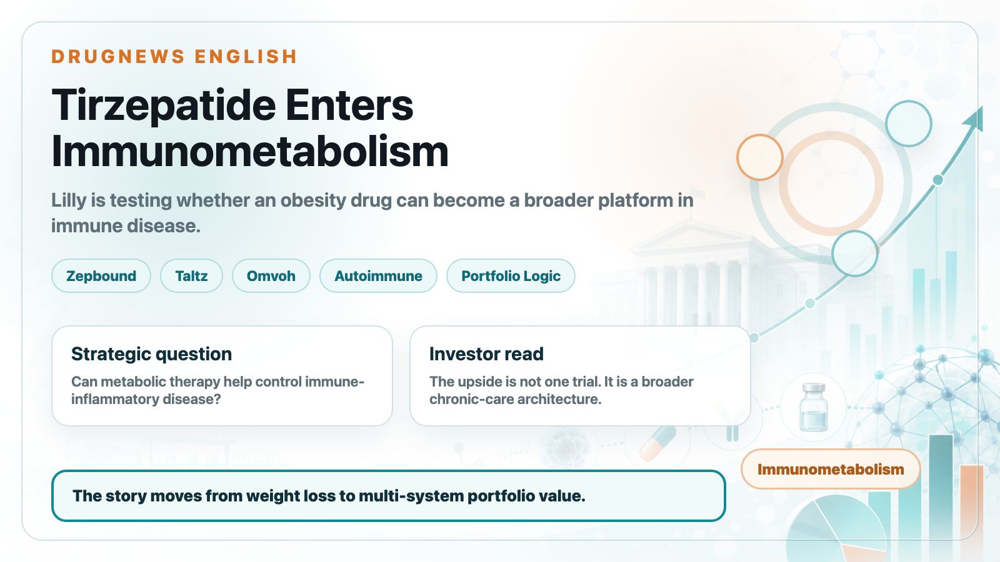
Tirzepatide Enters Autoimmune Disease: Is Immunometabolism Lilly's Next Expansion Path?
Lilly is testing whether tirzepatide can move beyond weight loss and become part of an immunometabolism strategy for chronic immune-inflammatory diseases.

Toward the “Roche of Pet Medicine”: Protect Biotech’s Platform Bet
As companion animals age and owners become more willing to pay for serious-disease care, the next major question in pet medicine is whether a platform company can connect drugs, diagnostics, veterinary clinics, regulation, manufacturing, channels, and data into one defensible system.
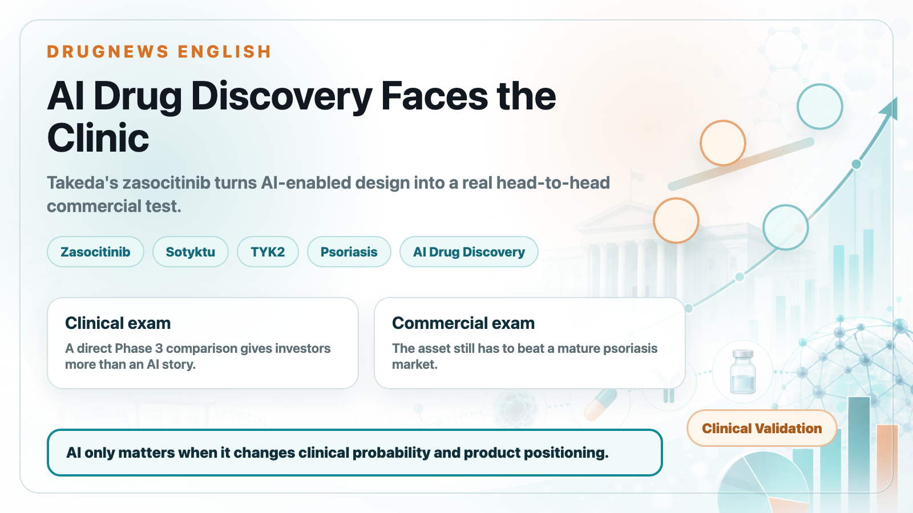
Is the First AI-Designed Drug Finally Arriving? Takeda's Zasocitinib Beats Sotyktu Head-to-Head
Takeda's zasocitinib beat Sotyktu in a head-to-head Phase 3 psoriasis study, turning AI-enabled drug design into a real commercial test.

The Race for the Third Obesity-Drug Giant: Who Comes After Lilly and Novo Nordisk?
Lilly and Novo Nordisk dominate the first phase of the obesity-drug market. The next investment question is who can become the third major player by solving the problems GLP-1 leaders have not fully solved.
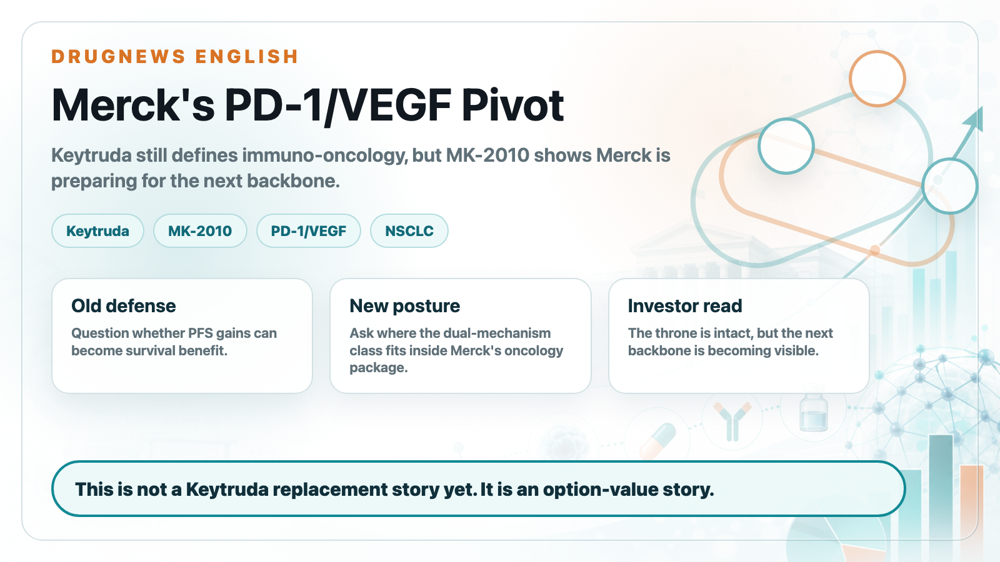
Merck's Shift on PD-1/VEGF Bispecifics: Keytruda Still Rules, but the Next IO Backbone Is Getting Closer
Merck's more serious positioning of MK-2010 suggests that PD-1/VEGF bispecifics are moving from a watch item to a strategic option in the post-Keytruda oncology landscape.
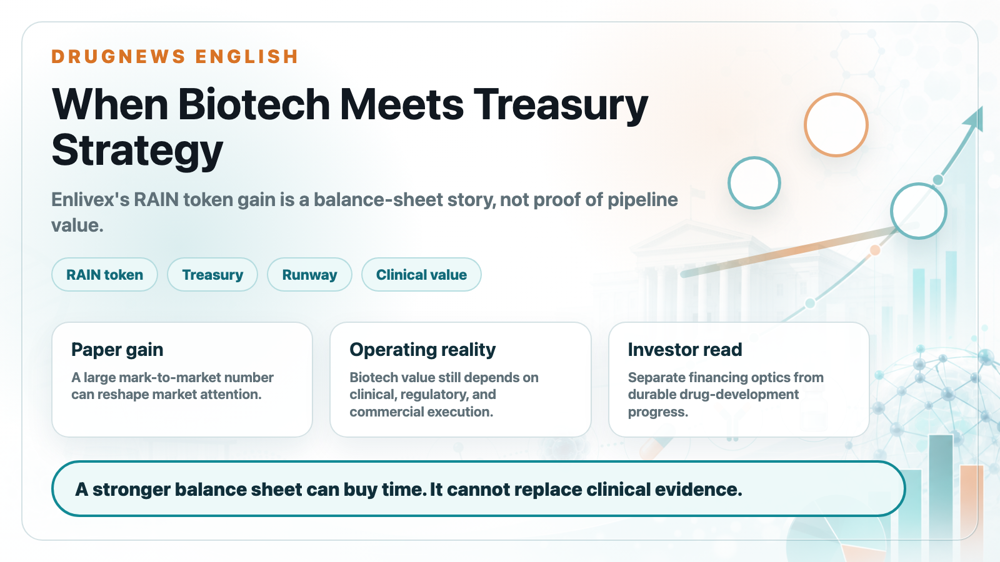
Enlivex's RAIN Token Windfall: When a Biotech Balance Sheet Starts Looking Like Crypto Treasury Strategy
Enlivex's paper gain from RAIN tokens shows how fragile biotech business models can create unusual treasury stories when operating revenue is absent and capital markets are difficult.
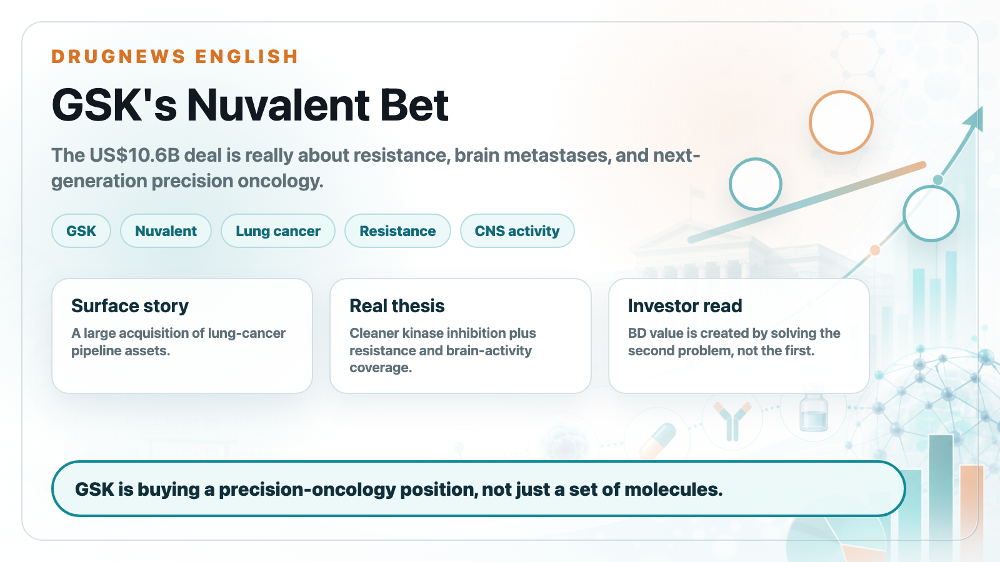
GSK's US$10.6 Billion Nuvalent Deal Is Really a Bet on Resistance and Brain Metastases
GSK is not merely buying three lung-cancer pipelines. It is buying a next-generation precision-oncology strategy around resistance, CNS activity, and cleaner kinase inhibition.
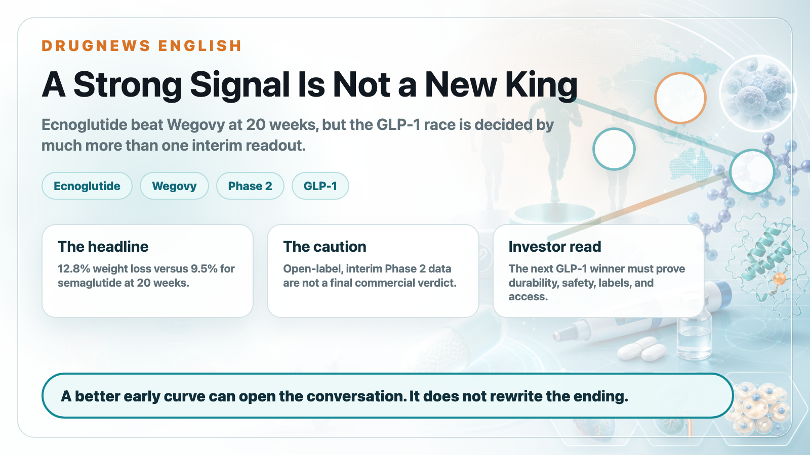
Ecnoglutide Versus Wegovy: A 20-Week Head-to-Head Signal Is Not the Same as a New GLP-1 King
Ecnoglutide's head-to-head weight-loss data versus semaglutide are interesting, but the GLP-1 race will be decided by long-term outcomes, tolerability, labels, supply, and global evidence.
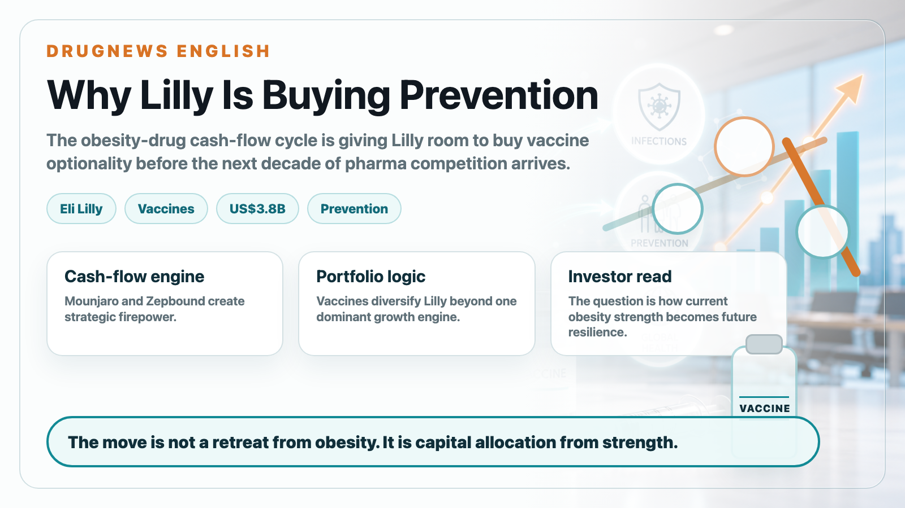
Why Would Lilly, the Obesity-Drug Giant, Spend US$3.8 Billion on Vaccine Companies?
Lilly's vaccine acquisitions show that the company is using obesity-drug cash flow to widen its long-term disease-prevention and immunology strategy.
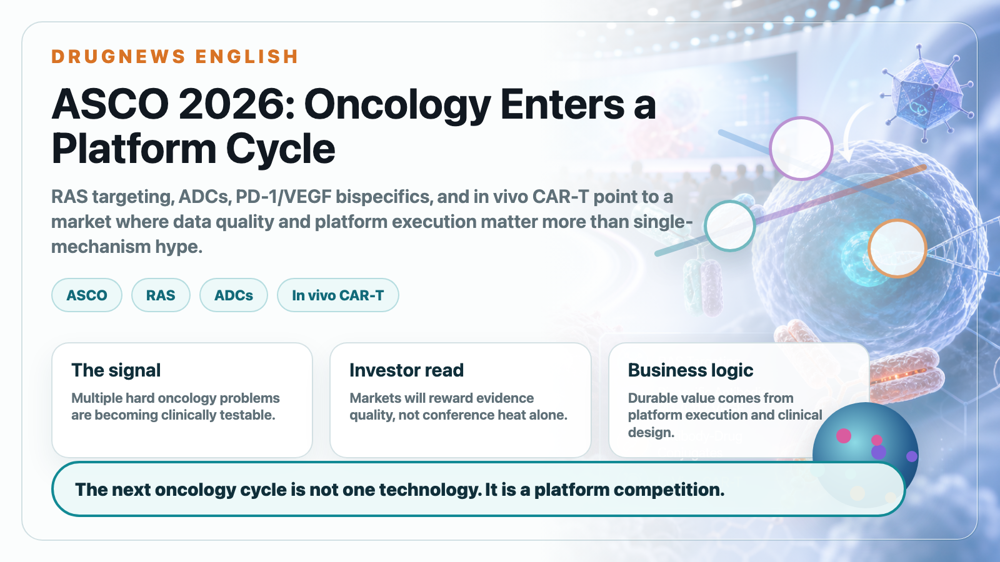
ASCO 2026: RAS, ADCs, Bispecifics, and In Vivo CAR-T Point to a New Oncology Cycle
ASCO 2026 showed that oncology is moving from single-mechanism breakthroughs toward platform combinations across RAS targeting, ADCs, PD-1/VEGF bispecifics, and in vivo CAR-T.
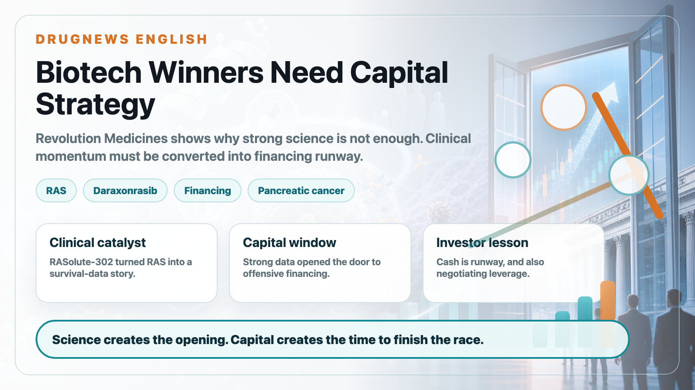
Revolution Medicines: Why Biotech Winners Need Capital Strategy, Not Just Good Science
Revolution Medicines shows why next-generation biotech companies need to convert clinical momentum into capital momentum if they want to finish expensive global drug-development races.

The Next Phase of AI Drug Development: Making Molecules Survive as Drugs
AI drug development is moving from molecular generation to clinical survival. AnHorn Medicines shows how AI+PROTAC, experimental feedback, and human translation may form a Taiwan-born clinical-asset engine.

Where Does AI Drug Discovery Stand Now? A Pipeline-Based Reality Check
AI drug discovery has moved beyond the concept stage and into clinical validation. This article reviews Zasocitinib, GB-0895, Zovegalisib, and REC-4881 to examine how different AI strategies are being converted into real drug assets.

Obesity Becomes King: How GLP-1 Is Reshuffling Global Biotech Capital
GLP-1 is no longer only a weight-loss topic. It is redirecting biotech capital, BD urgency, manufacturing attention, and valuation imagination across global pharma.
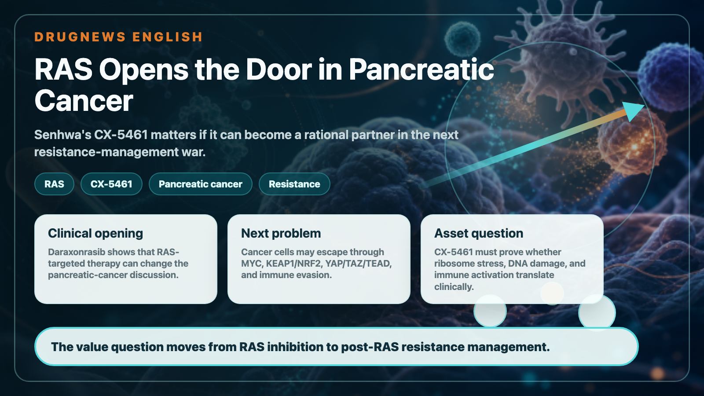
RAS Targeting Opens a New Pancreatic-Cancer Window: How Senhwa's CX-5461 Positions for the Next Resistance-Management War
Daraxonrasib opens a new pancreatic-cancer window, but the next value question is resistance management. Senhwa's CX-5461 matters if it can become a rational combination partner.

Biotech IR Is Not Making Slides Prettier; It Is Turning Pipelines Into Trackable Capital-Market Stories
Biotech IR is not cosmetic storytelling. Good IR turns clinical, CMC, regulatory, commercial, and financing milestones into a capital-market narrative that investors can actually track.

The US$7 Billion Radiopharma Deal Rumor: Curium Wants Lantheus, but the Real Prize Is a Ticket to the Nuclear-Medicine Era
Curium's rumored interest in Lantheus is best read as a bid for nuclear-medicine infrastructure: isotope access, hospital channels, imaging workflow, and radiopharma commercialization depth.
CAR-T Enters a New Era: From Blood Cancer to Autoimmune Disease
CAR-T's move from blood cancer into autoimmune disease could redefine cell therapy, but the value depends on whether deep immune reset can justify manufacturing complexity, safety risk, and cost.
Drugmakers Without AI Capability May No Longer Be Called Drugmakers
AI is becoming a core operating capability for pharma, but its value comes from improving discovery, translation, trial design, and portfolio decisions rather than from marketing language alone.
Old Targets Are Crowded, but They Can Still Make Money
Crowded drug targets can still create value when companies differentiate through patient selection, formulation, route of administration, clinical design, pricing, or commercial channel strategy.
Starting With Ruxolitinib Cream: Why Not Every JAK Molecule Can Become a Topical Drug
Topical JAK drugs are not won by target biology alone. The real value lies in skin delivery, local exposure, systemic safety, indication choice, and whether the product can fit daily dermatology practice.
Retatrutide Moves Toward Surgery-Level Weight Loss: Lilly's Triple-Agonist Pushes Obesity Treatment Into a New Arena
Retatrutide pushes obesity-drug efficacy toward surgery-level territory, but the real competitive battle will be durability, tolerability, body composition, comorbidity benefit, and access.
A Genetic Disease With No New Treatment for 40 Years Finally Enters a New Drug Era
AATD is entering a new treatment cycle after decades of limited options, with RNA and gene-based approaches trying to move the field beyond symptom control and protein replacement.
Biogen's High-Risk Bet: Can Tau Find a Way Out of the Alzheimer's R&D Graveyard?
Biogen's BIIB080 tau program reflects a broader Alzheimer's reset: the field is no longer only asking whether amyloid matters, but whether tau biology can produce measurable disease-modifying benefit.
Pluvicto Is Selling Fast: What Radioligand Therapy Growth Really Means
Pluvicto's rapid growth shows radioligand therapy moving from specialist science into a real commercial infrastructure story, where isotope supply, hospital workflow, and patient selection become strategic assets.
The Tavneos Crisis: Death Reports, Data-Integrity Questions, and an Amgen Rare-Disease Star at the Edge of Withdrawal
A Drugnews English brief on The Tavneos Crisis: Death Reports, Data-Integrity Questions, and an Amgen Rare-Disease Star at the Edge of Withdrawal, focusing on regulatory risk, clinical evidence, company strategy, business development, and biotech capital-market implications.
The Best Partner for a Drug King? When Combination Therapy Doubles Efficacy
A Drugnews English brief on The Best Partner for a Drug King? When Combination Therapy Doubles Efficacy, focusing on company strategy, clinical evidence, company strategy, business development, and biotech capital-market implications.
Weight-Loss Drugs Are No Longer Only About Body Weight: Where Next-Generation Therapies Are Aiming
A Drugnews English brief on Weight-Loss Drugs Are No Longer Only About Body Weight: Where Next-Generation Therapies Are Aiming, focusing on ai drug discovery, clinical evidence, company strategy, business development, and biotech capital-market implications.
Biotech Investing Needs a Judgment System, Not More News
A Drugnews English brief on Biotech Investing Needs a Judgment System, Not More News, focusing on business development, clinical evidence, company strategy, business development, and biotech capital-market implications.
The First Step in Valuing Taiwanese Biotech: Stop Forcing Every Company Into the Same P/E Ratio
A Drugnews English brief on The First Step in Valuing Taiwanese Biotech: Stop Forcing Every Company Into the Same P/E Ratio, focusing on ai drug discovery, clinical evidence, company strategy, business development, and biotech capital-market implications.
Sun Pharma, Teva, and the Transformation Anxiety of Global Generic Drugmakers
A Drugnews English brief on Sun Pharma, Teva, and the Transformation Anxiety of Global Generic Drugmakers, focusing on big pharma, clinical evidence, company strategy, business development, and biotech capital-market implications.
A New Weight-Loss Drug Side Effect Accidentally Opens a New Therapeutic Track
A Drugnews English brief on A New Weight-Loss Drug Side Effect Accidentally Opens a New Therapeutic Track, focusing on obesity medicine, clinical evidence, company strategy, business development, and biotech capital-market implications.
Asthma Drugs Are Shifting Gears: From Triple Inhalers to Upstream Immune Targets
A Drugnews English brief on Asthma Drugs Are Shifting Gears: From Triple Inhalers to Upstream Immune Targets, focusing on immunology, clinical evidence, company strategy, business development, and biotech capital-market implications.
Why OX2R Is Heating Up: From Narcolepsy to the Next CNS Drug Opportunity
A Drugnews English brief on Why OX2R Is Heating Up: From Narcolepsy to the Next CNS Drug Opportunity, focusing on obesity medicine, clinical evidence, company strategy, business development, and biotech capital-market implications.
The Global Biotech Wave: Understanding the Main Phase and Scientific Pricing of the Five-Trillion Weight-Loss Market
A Drugnews English brief on The Global Biotech Wave: Understanding the Main Phase and Scientific Pricing of the Five-Trillion Weight-Loss Market, focusing on ai drug discovery, clinical evidence, company strategy, business development, and biotech capital-market implications.
How Mid-Sized Biotechs Are Turning Blockbuster Drugs From Dreams Into Cash Flow
A Drugnews English brief on How Mid-Sized Biotechs Are Turning Blockbuster Drugs From Dreams Into Cash Flow, focusing on obesity medicine, clinical evidence, company strategy, business development, and biotech capital-market implications.
How AI Semiconductors Have Hidden the Biotech Opportunity in Plain Sight
A Drugnews English brief on How AI Semiconductors Have Hidden the Biotech Opportunity in Plain Sight, focusing on ai drug discovery, clinical evidence, company strategy, business development, and biotech capital-market implications.
A Record AI Drug-Discovery Financing: Why a Google-Backed Company Raised US$2.1 Billion
A Drugnews English brief on A Record AI Drug-Discovery Financing: Why a Google-Backed Company Raised US$2.1 Billion, focusing on ai drug discovery, clinical evidence, company strategy, business development, and biotech capital-market implications.
HIV Drugs Are Still Highly Profitable: What Gilead's Earnings Reveal
A Drugnews English brief on HIV Drugs Are Still Highly Profitable: What Gilead's Earnings Reveal, focusing on car-t, clinical evidence, company strategy, business development, and biotech capital-market implications.
Where Pfizer Misjudged the Vepdegestrant Strategy
A Drugnews English brief on Where Pfizer Misjudged the Vepdegestrant Strategy, focusing on targeted therapy, clinical evidence, company strategy, business development, and biotech capital-market implications.
Johnson & Johnson Cuts Two Autologous Lymphoma CAR-T Programs
A Drugnews English brief on Johnson & Johnson Cuts Two Autologous Lymphoma CAR-T Programs, focusing on car-t, clinical evidence, company strategy, business development, and biotech capital-market implications.
Daiichi Sankyo's Most Expensive Lesson: How an ADC Capacity Bet Can Backfire After a Blockbuster
A Drugnews English brief on Daiichi Sankyo's Most Expensive Lesson: How an ADC Capacity Bet Can Backfire After a Blockbuster, focusing on ai drug discovery, clinical evidence, company strategy, business development, and biotech capital-market implications.
The FDA Commissioner's Exit: Why the World's Most Important Drug Referee Is Becoming Less Predictable
A Drugnews English brief on The FDA Commissioner's Exit: Why the World's Most Important Drug Referee Is Becoming Less Predictable, focusing on regulatory risk, clinical evidence, company strategy, business development, and biotech capital-market implications.
A Complete Map of the New Antidepressant Drug Pipeline
A Drugnews English brief on A Complete Map of the New Antidepressant Drug Pipeline, focusing on obesity medicine, clinical evidence, company strategy, business development, and biotech capital-market implications.
How PharmaEssentia's Besremi Opens a Larger Valuation Imagination
A Drugnews English brief on How PharmaEssentia's Besremi Opens a Larger Valuation Imagination, focusing on targeted therapy, clinical evidence, company strategy, business development, and biotech capital-market implications.
Could Neuroinflammation Bring CNS Drug Development Back?
A Drugnews English brief on Could Neuroinflammation Bring CNS Drug Development Back?, focusing on cns, clinical evidence, company strategy, business development, and biotech capital-market implications.
The Autoimmune Twins That Could Save Johnson & Johnson
A Drugnews English brief on The Autoimmune Twins That Could Save Johnson & Johnson, focusing on car-t, clinical evidence, company strategy, business development, and biotech capital-market implications.
Could DAC Become the Next Breakout Format in Targeted Therapy?
A Drugnews English brief on Could DAC Become the Next Breakout Format in Targeted Therapy?, focusing on targeted therapy, clinical evidence, company strategy, business development, and biotech capital-market implications.
Trump Delays the Policy Signal: Did Weight-Loss Drugs Cut Prices for Nothing?
A Drugnews English brief on Trump Delays the Policy Signal: Did Weight-Loss Drugs Cut Prices for Nothing?, focusing on obesity medicine, clinical evidence, company strategy, business development, and biotech capital-market implications.
Clinical-Trial Fraud and an FDA Withdrawal Storm
A Drugnews English brief on Clinical-Trial Fraud and an FDA Withdrawal Storm, focusing on regulatory risk, clinical evidence, company strategy, business development, and biotech capital-market implications.
Weight-Loss Drugs Are Still Too Strong: Lilly's Mounjaro Keeps Printing Money
A Drugnews English brief on Weight-Loss Drugs Are Still Too Strong: Lilly's Mounjaro Keeps Printing Money, focusing on obesity medicine, clinical evidence, company strategy, business development, and biotech capital-market implications.
The Shadow Behind the Next Century-Defining Drug
A Drugnews English brief on The Shadow Behind the Next Century-Defining Drug, focusing on car-t, clinical evidence, company strategy, business development, and biotech capital-market implications.
Free Taipei Workshop: Using an NPV Framework to Identify Biotech Re-Rating Points
A Drugnews English brief on Free Taipei Workshop: Using an NPV Framework to Identify Biotech Re-Rating Points, focusing on ai drug discovery, clinical evidence, company strategy, business development, and biotech capital-market implications.
What Makes a Pipeline Attractive to Big Pharma?
A Drugnews English brief on What Makes a Pipeline Attractive to Big Pharma?, focusing on obesity medicine, clinical evidence, company strategy, business development, and biotech capital-market implications.
The Hair-Growth Drug That Jumped 47%: Why It Could Rewrite Three Decades of Hair-Loss Treatment
A Drugnews English brief on The Hair-Growth Drug That Jumped 47%: Why It Could Rewrite Three Decades of Hair-Loss Treatment, focusing on ai drug discovery, clinical evidence, company strategy, business development, and biotech capital-market implications.
In Vivo CAR-T: Bubble or the Most Expensive Ticket to Next-Generation Cell Therapy?
A Drugnews English brief on In Vivo CAR-T: Bubble or the Most Expensive Ticket to Next-Generation Cell Therapy?, focusing on car-t, clinical evidence, company strategy, business development, and biotech capital-market implications.
The Ambition of an Indian Pharma Giant: Acquiring a US Drugmaker
A Drugnews English brief on The Ambition of an Indian Pharma Giant: Acquiring a US Drugmaker, focusing on big pharma, clinical evidence, company strategy, business development, and biotech capital-market implications.
Is the 20-Year Amyloid Hypothesis in Alzheimer's Disease Starting to Collapse?
A Drugnews English brief on Is the 20-Year Amyloid Hypothesis in Alzheimer's Disease Starting to Collapse?, focusing on cns, clinical evidence, company strategy, business development, and biotech capital-market implications.
Amazon Enters AI Drug Discovery and Challenges Nvidia's Pharma Ambition
A Drugnews English brief on Amazon Enters AI Drug Discovery and Challenges Nvidia's Pharma Ambition, focusing on ai drug discovery, clinical evidence, company strategy, business development, and biotech capital-market implications.
A Clear Read on Lilly's Current M&A Logic
A Drugnews English brief on A Clear Read on Lilly's Current M&A Logic, focusing on ai drug discovery, clinical evidence, company strategy, business development, and biotech capital-market implications.
When a Gray-Market Industry Gets a Seat at the Table
A Drugnews English brief on When a Gray-Market Industry Gets a Seat at the Table, focusing on ai drug discovery, clinical evidence, company strategy, business development, and biotech capital-market implications.
Goodbye Autologous CAR-T: Why Taiwan's Cell-Therapy Bubble Also Needs to Break
A Drugnews English brief on Goodbye Autologous CAR-T: Why Taiwan's Cell-Therapy Bubble Also Needs to Break, focusing on ai drug discovery, clinical evidence, company strategy, business development, and biotech capital-market implications.
The Healthcare-Giant Spin-Off Wave
A Drugnews English brief on The Healthcare-Giant Spin-Off Wave, focusing on business development, clinical evidence, company strategy, business development, and biotech capital-market implications.
Why Platform Biotechs Can Generate Five Times More Licensing Revenue
A Drugnews English brief on Why Platform Biotechs Can Generate Five Times More Licensing Revenue, focusing on business development, clinical evidence, company strategy, business development, and biotech capital-market implications.
Investors Should Pay Attention: Drug Delivery Is a Blue Ocean
A Drugnews English brief on Investors Should Pay Attention: Drug Delivery Is a Blue Ocean, focusing on business development, clinical evidence, company strategy, business development, and biotech capital-market implications.
Do COPD Patients Finally Have Another New Drug Option?
A Drugnews English brief on Do COPD Patients Finally Have Another New Drug Option?, focusing on business development, clinical evidence, company strategy, business development, and biotech capital-market implications.
The Three AI Giants Battling Inside Medicine
A Drugnews English brief on The Three AI Giants Battling Inside Medicine, focusing on ai drug discovery, clinical evidence, company strategy, business development, and biotech capital-market implications.
Did Lilly's Oral Drug Ignite the Market?
A Drugnews English brief on Did Lilly's Oral Drug Ignite the Market?, focusing on ai drug discovery, clinical evidence, company strategy, business development, and biotech capital-market implications.
A Historic Moment: The Next Century-Defining Drug Has Arrived
A Drugnews English brief on A Historic Moment: The Next Century-Defining Drug Has Arrived, focusing on obesity medicine, clinical evidence, company strategy, business development, and biotech capital-market implications.
Neuralink and the Next Trillion-Dollar Race: Ten Brain-Computer Interface Companies to Know
A Drugnews English brief on Neuralink and the Next Trillion-Dollar Race: Ten Brain-Computer Interface Companies to Know, focusing on ai drug discovery, clinical evidence, company strategy, business development, and biotech capital-market implications.
Could This Taiwanese Biotech Capture the Entire AI Infrastructure Dividend?
A Drugnews English brief on Could This Taiwanese Biotech Capture the Entire AI Infrastructure Dividend?, focusing on ai drug discovery, clinical evidence, company strategy, business development, and biotech capital-market implications.
The Valley of Death in Innovative Drug Development
A Drugnews English brief on The Valley of Death in Innovative Drug Development, focusing on business development, clinical evidence, company strategy, business development, and biotech capital-market implications.
The 2026 Q2 Drug Catalysts Biotech Readers Need to Know
A Drugnews English brief on The 2026 Q2 Drug Catalysts Biotech Readers Need to Know, focusing on immunology, clinical evidence, company strategy, business development, and biotech capital-market implications.
The Fall of Two Star Biotechs
A Drugnews English brief on The Fall of Two Star Biotechs, focusing on obesity medicine, clinical evidence, company strategy, business development, and biotech capital-market implications.
Investors Should Pay Attention to the Autoimmune Mega-Drug Race
A Drugnews English brief on Investors Should Pay Attention to the Autoimmune Mega-Drug Race, focusing on business development, clinical evidence, company strategy, business development, and biotech capital-market implications.
The King of Weight-Loss Drugs: Did US$7.8 Billion Buy the Next Era of Metabolic Medicine?
A Drugnews English brief on The King of Weight-Loss Drugs: Did US$7.8 Billion Buy the Next Era of Metabolic Medicine?, focusing on ai drug discovery, clinical evidence, company strategy, business development, and biotech capital-market implications.
Idiopathic Pulmonary Fibrosis Is Entering an Acceleration Phase
A Drugnews English brief on Idiopathic Pulmonary Fibrosis Is Entering an Acceleration Phase, focusing on immunology, clinical evidence, company strategy, business development, and biotech capital-market implications.
Why Did the Market Like This Company More After a Clinical Failure?
A Drugnews English brief on Why Did the Market Like This Company More After a Clinical Failure?, focusing on ai drug discovery, clinical evidence, company strategy, business development, and biotech capital-market implications.
When Should a Company Decisively Abandon a Clinical Trial?
A Drugnews English brief on When Should a Company Decisively Abandon a Clinical Trial?, focusing on business development, clinical evidence, company strategy, business development, and biotech capital-market implications.
A New Drug Finally Arrives for This Group of Rare-Disease Patients
A Drugnews English brief on A New Drug Finally Arrives for This Group of Rare-Disease Patients, focusing on ai drug discovery, clinical evidence, company strategy, business development, and biotech capital-market implications.
The Abivax Story: How a European Biotech Became a 14-Fold Market Myth
A Drugnews English brief on The Abivax Story: How a European Biotech Became a 14-Fold Market Myth, focusing on business development, clinical evidence, company strategy, business development, and biotech capital-market implications.
While the US CDC Was Still Looking for a Director
A Drugnews English brief on While the US CDC Was Still Looking for a Director, focusing on regulatory risk, clinical evidence, company strategy, business development, and biotech capital-market implications.
The Cut-Rate Weight-Loss Injection Has Arrived: What a NT$420 Monthly Price Really Means
A Drugnews English brief on The Cut-Rate Weight-Loss Injection Has Arrived: What a NT$420 Monthly Price Really Means, focusing on obesity medicine, clinical evidence, company strategy, business development, and biotech capital-market implications.
How Far Are We From a Real Anti-Aging Drug?
A Drugnews English brief on How Far Are We From a Real Anti-Aging Drug?, focusing on clinical development, clinical evidence, company strategy, business development, and biotech capital-market implications.
Did Weight-Loss Injections Backfire and Trigger Pancreatitis Risk?
A Drugnews English brief on Did Weight-Loss Injections Backfire and Trigger Pancreatitis Risk?, focusing on obesity medicine, clinical evidence, company strategy, business development, and biotech capital-market implications.
After GLP-1 and Mounjaro, What Is Happening in Weight-Loss Drug R&D?
A Drugnews English brief on After GLP-1 and Mounjaro, What Is Happening in Weight-Loss Drug R&D?, focusing on obesity medicine, clinical evidence, company strategy, business development, and biotech capital-market implications.
Can Merck Build Another Oncology Empire?
A Drugnews English brief on Can Merck Build Another Oncology Empire?, focusing on big pharma, clinical evidence, company strategy, business development, and biotech capital-market implications.
Innovent's Globalization Train: Did Taiwan's Forward Therapeutics Get On Board?
A Drugnews English brief on Innovent's Globalization Train: Did Taiwan's Forward Therapeutics Get On Board?, focusing on ai drug discovery, clinical evidence, company strategy, business development, and biotech capital-market implications.